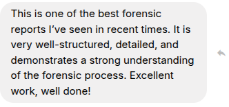

Why I’m Pursuing Threat Intelligence
June 12, 2025
Throughout my life, both early and late (I'm only 24), writing has been my constant. During high school, I heavily immersed myself in English and Literature, where I found my deep appreciation for language, structure, and the art of conveying complex ideas with clarity. Reflecting on my academic success during this period further affirmed my natural inclination toward written communication and analysis.
After my secondary education came to an end, my professional path led me into the construction and sustainability industry. During this time, I found that my interest always returned to writing and design, where I undertook summer classes with Deakin University in Literature. Although brief, the influence this experience had still remains with me where I refined my abilities to research, synthesise information, and engage with complex, technical material.
One of my biggest achievements in my professional journey was securing a role as a copywriter and social media manager for a major technology company, despite not holding any formal qualifications in either field. My work stood on its own, and through the interview process, I had successfully highlighted my ability to communicate through both technical and non-technical lenses with precision. This role introduced me to the discipline of adjusting language for diverse audiences and producing work that balanced clarity with technical depth. I was regularly entrusted with projects that extended beyond my initial scope of responsibilities, providing opportunities to develop new skills and broaden my undestanding of technology which I found was an incredibly rewarding experience. Without this, my approach to report writing would not be what it is today.
It was within this role that my curiosity for technology strengthened, where while assisting with a warehouse relocation, I found myself drawn to the hardware and infrastructure around me. What initially began as exposure to product knowledge soon became a fascination with the intricate systems that provide the foundation for computing and information technology. This deepened further as I started my tertiary education in cybersecurity, where first-year units such as Computer Systems introduced me to the technical frameworks and challenges that define these very physical components I learnt about in my professional role.
Throughout these varying experiences, one single thread remained constant: my attention-to-detail. Whether it's crafting reports, analysing information, or communicating findings in an engaging manner, I have always focused on the finer points that others may overlook. It is often these subtle elements that carry the greatest weight in both writing and technical analysis. It is the fine balance between clarity, and accuracy. Threat intelligence, by its very nature, demands such accuracy by dissecting vast amounts of information, identifying meaningful patterns, and presenting these findings in a way that informs decisions and mitigates risk.
My work in cybersecurity has allowed me to merge these complementary skills, as demonstrated by the most amazing feedback given in my Computer Forensics and Investigations unit: This was further demonstrated in my SIT282 class, where I received the most amazing feedback:

(This is why I do what I do!!! 🥹)
Threat intelligence presents a space where I can apply my love of language, my analytical mindset, and my growing technical expertise. It allows me to directly engage in complex problems, and present my findings to a diverse audience with purpose.
Above all, my path has been guided by curiosity. Many of the opportunities that have defined my interests arose from moments where I chose to step outside my comfort zone. Had I not volunteered to assist with a warehouse move, I might have never encountered the world of technology in the way that I have and for this I am forever grateful to this single decision. That same openness is what drives me forward to this day as I continue to build a life for myself within cybersecurity, embracing all the wacky and wonderful challenges that come my way.
My journey did not follow a conventional route, yet reflects a constant pursuit for excellence, adaptability, and a genuine passion for both writing and analysis. I am eager to continue demonstrating these qualities within my future work.